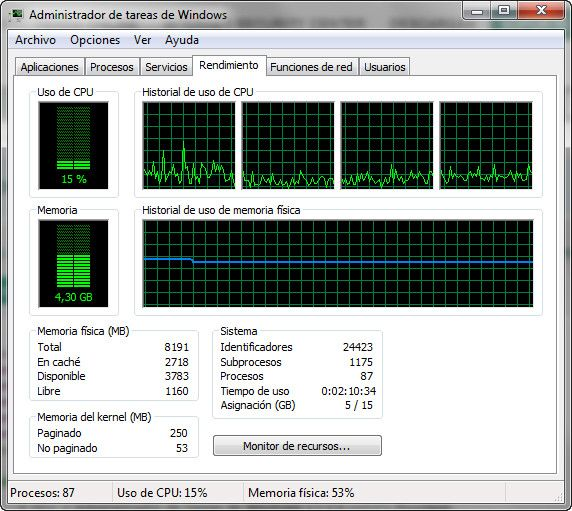
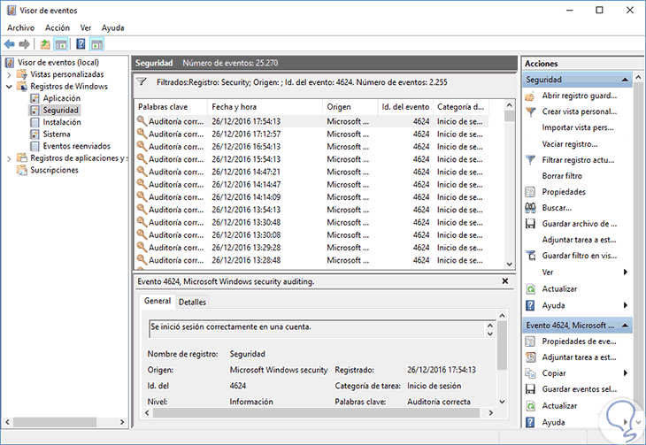

Herramientas de monitorización
La monitorización del sistema operativo en red permite observar el uso de recursos, el estado de los servicios y el comportamiento general del sistema con el fin de anticipar incidencias y garantizar la estabilidad y el rendimiento.
- Registro de métricas clave (CPU, memoria, disco y red).
- Detección de anomalías y generación de alertas.
- Análisis de tendencias de rendimiento.
Interfaces gráficas de monitorización
Las herramientas gráficas facilitan la visualización del rendimiento mediante gráficos y paneles en tiempo real, siendo especialmente útiles en entornos formativos y de laboratorio.
- Monitor de rendimiento (PerfMon) en Windows.
- Administrador de tareas y Monitor de recursos.
- GNOME System Monitor en Linux.
.jpg)

Visor de eventos en Windows

Herramientas de línea de comandos
Las herramientas CLI ofrecen mayor precisión y automatización, siendo habituales en servidores sin entorno gráfico y en entornos de producción.
top # Visualiza procesos en tiempo real
htop # Versión mejorada de top
iostat -x 5 # Estadísticas de I/O cada 5 segundos
df -h # Muestra el uso del espacio en discoGet-Process # Lista los procesos en ejecución
Get-Service # Lista los servicios instalados
Get-EventLog -LogName System -Newest 10 # Muestra los 10 registros más recientes del registro del sistemaAnálisis de procesos y servicios
La supervisión de procesos permite identificar consumos anómalos de CPU o memoria y detectar aplicaciones o servicios que degradan el rendimiento del sistema.
ps aux | head
renice -n 5 -p 1234
kill -9 1234Detección de incidencias
Detectar incidencias consiste en observar métricas, identificar comportamientos anómalos y diagnosticar sus causas antes de que afecten al servicio.
- Problemas de rendimiento (CPU, memoria, disco).
- Fallos físicos o lógicos en almacenamiento.
Fallos en almacenamiento
Los fallos en discos pueden ser físicos, lógicos o de configuración y comprometen la integridad de los datos y la disponibilidad del sistema.
smartctl -a /dev/sda
fsck /dev/sda1
iotopchkdsk C:
wmic diskdrive get statusTareas de mantenimiento
El mantenimiento preventivo y correctivo preserva la estabilidad, seguridad y rendimiento del sistema operativo en red.
- Actualizaciones del sistema y del software.
- Limpieza de archivos temporales y logs.
- Documentación de cada intervención.
Automatización y programación de tareas
La automatización permite ejecutar tareas repetitivas de forma periódica, reduciendo errores humanos y mejorando la eficiencia.
Pasos para configurar crontab en Linux
- Editar el archivo de crontab:
crontab -e - Definir la programación con el formato:
minuto hora día_mes mes día_semana comando - Guardar y salir para activar la tarea programada.
0 3 * * * /usr/bin/backup.sh # Ejecuta el script de backup cada día a las 3 AM
0 1 * * 0 /usr/sbin/logrotate # Ejecuta logrotate cada domingoRegister-ScheduledTask -TaskName "LimpiezaLogs" `
-Action (New-ScheduledTaskAction -Execute "cleanmgr.exe") `
-Trigger (New-ScheduledTaskTrigger -Weekly -DaysOfWeek Sunday)Interpretación de trazas del sistema
Los registros de eventos son la fuente principal para el diagnóstico de errores, accesos no autorizados y fallos de servicios.
journalctl -xe
grep "Failed password" /var/log/auth.logGet-EventLog -LogName Security -EntryType Error -Newest 5